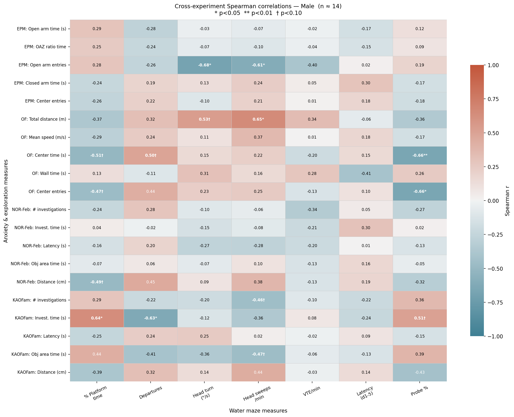
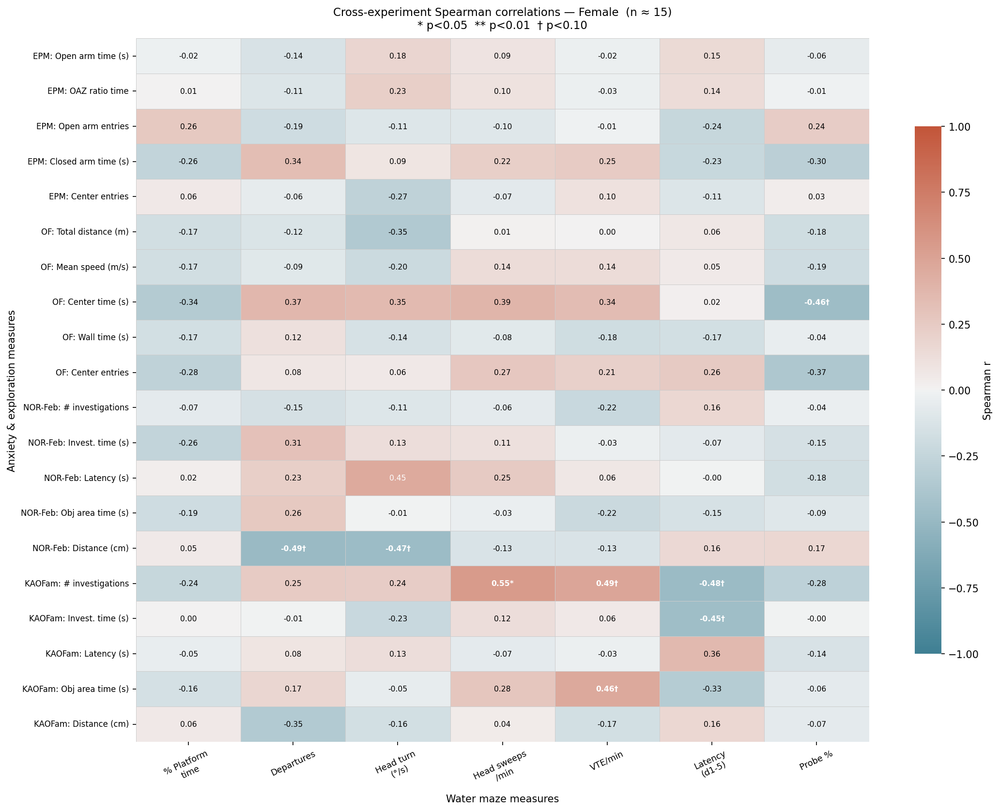

VOL. IV
CROSS-EXPERIMENT PHENOTYPING · SFN 2026 ARCHIVE
KAC COHORT · 29 RATS
Cross-Experiment Phenotyping: Water Maze Checking × Exploration Assays
Water maze checking dynamics correlated with Elevated Plus Maze (EPM), Open Field (OF), and Novel Object Recognition (NOR/PPT) assays across the KAC cohort (n = 29, males 1–16, females 17–32). Water maze metrics are drawn from the Day 6 checking test (standard 1.5 cm depth).
Animals (n)
—
With complete water maze + behavioral battery
Significant Tests
—
p < 0.05 Spearman r across all animals (420 total tests)
Strongest Effect
—
Open Field centre entries × % platform retention time
EPM Dissociation
—
EPM open arm ratio does not correlate with departures (p > 0.50)
Top 5 Ranked Correlations
Neurobehavioral Interpretation
- Open field locomotion cluster: Locomotor drive in the open field anti-correlates strongly with platform dwell (r ≈ −0.65, p < 0.001): more active rats depart the platform sooner and more frequently.
- Center exploration mirrors disembarkation: Animals entering the open arena center spend significantly less time anchored (r = −0.66). Active open-space boldness maps onto water maze disembarkation.
- NOR object investigation: Investigation duration of the relocated object predicts platform departures (r = 0.54) and head scanning sweeps (r = 0.52).
- Dissociation from anxiety: EPM open-arm ratio does not correlate with checking departures (r = −0.10, p = 0.59), confirming checking is driven by spatial foraging exploration, not panic.
Correlation Matrices
Behavioral Battery × Water Maze Measures
Spearman rank correlation coefficients between anxiety/exploration assays (rows) and water maze Day 6 checking measures (columns).
All Animals (n = 29)
Males Only (n = 13)
Females Only (n = 16)



Bivariate Relationships
Key Scatter Plots with Animal Annotations
Each point denotes an individual animal, color-coded by sex (█ Male, █ Female) with linear regression fit line.
Statistical Audit
All Statistically Significant Tests (p < 0.05)
Ranked by effect magnitude |r|. Click column headers to sort.
| Assay Measure | Water Maze Measure | n | Spearman r | P-Value | |r| |
|---|
Raw Master Dataset
Per-Rat Integrated Records
Full 39-variable merged matrix across all 29 animals. Click column headers to sort; filter by sex or search by rat ID.